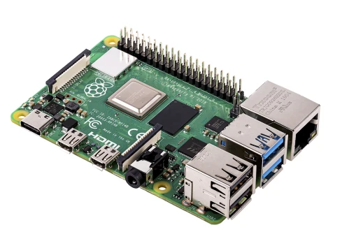

Hardware Components & Setup Documentation¶
1. Device List¶
This system consists of the following IoT hardware components:
- Raspberry Pi 3 B+ (64 GB microSD storage)
- AudioMoth (Acoustic logger)
- 4G Router (with SIM card)
- Internet SIM Card
- Solar Panel (with battery storage)
2. Raspberry Pi Setup¶
2.1. Hardware¶
- Model: Raspberry Pi 3 B+
- Storage: 64 GB microSD card
2.2. OS Installation¶
- Insert the SD card into your computer.
- Use Balena Etcher (or similar) to flash the provided
.imgbackup OS image. - Insert the flashed SD card into the Raspberry Pi.
- Power on the device.
| Raspberry Pi | SD Card |
|---|---|
|  |
{kind=link}
{kind=link}
📥 Download Raspberry Pi OS Image
2.3. Login Credentials¶
Default credentials (can be customized):
- Username: pi
- Password: raspberry
3. VPN Configuration¶
Each Raspberry Pi has its own OpenVPN account.
3.1. File Structure¶
Navigate to the OpenVPN directory:
cd /etc/openvpn/
ls
Expected files:
client/
credentials.txt
openvpn_MONSOON_TEA05.conf
server/
update-resolv-conf
openvpn_MONSOON_TEA05.conf→ Converted.ovpnclient config filecredentials.txt→ VPN username & password (two lines only)
3.2. Credentials Setup¶
Check credentials:
cat /etc/openvpn/credentials.txt
Format:
vpn_username
vpn_password
Secure file permissions:
sudo chmod 600 /etc/openvpn/credentials.txt
3.3. VPN Service Setup¶
Enable & start service:
sudo systemctl enable openvpn@openvpn_MONSOON_TEA05
sudo systemctl start openvpn@openvpn_MONSOON_TEA05
Manual connect:
sudo openvpn --config openvpn_MONSOON_TEA05.ovpn
Verify connection:
ifconfig
VPN tunnel should point to 10.81.234.5.
4. Device Configuration File¶
Example config.json:
{
"ftp": {
"uname": "monsoon",
"pword": "p8z3%1P#04",
"host": "192.168.70.5/production-workflow-ec2",
"use_ftps": 1
},
"offline_mode": 0,
"sensor": {
"sensor_index": 2,
"sensor_type": "USBSoundcardMic",
"record_length": 600,
"compress_data": false,
"capture_delay": 0
},
"sys": {
"working_dir": "/home/pi/tmp_dir",
"upload_dir": "/home/pi/continuous_monitoring_data",
"reboot_time": "02:00"
},
"device_id": "00000000f1c084c2"
}
5. Automatic Recording Service¶
Example systemd service (/etc/systemd/system/shellscript.service):
[Unit]
Description=My Shell Script
[Service]
ExecStart=/home/pi/custom-pi-setup/recorder_startup_script.sh
[Install]
WantedBy=multi-user.target
Check live service logs:
journalctl -u shellscript.service -f
6. Important Commands¶
| Command | Purpose |
|---|---|
arecord -l | List available recording devices |
journalctl -u shellscript.service -f | Live monitoring of recording service |
sudo systemctl restart shellscript.service | Restart recording service |
7. AudioMoth Setup¶
7.1. Overview¶
AudioMoth is a low-cost, full-spectrum acoustic logger, based on the Gecko processor range from Silicon Labs.
It can record audible and ultrasonic frequencies at rates from 8,000 to 384,000 samples/sec.
It is used in two modes: mobile and station.
7.2. Modes¶
Mobile Type¶
- Portable configuration for temporary deployments
- Ideal for short-term surveys
📄 Download Mobile AudioMoth Manual (PDF)
Station Type¶
- Fixed position setup for continuous monitoring
- Powered by solar & external battery
📄 Download IoT Station Setup Manual (PDF)
8. Router Setup & Troubleshooting¶
- Type: 4G Router with SIM
- Purpose: Internet connection for remote locations
Troubleshooting Checklist: 1. Check LED status indicators
2. Ensure SIM card is active
3. Restart router if connection drops
9. Solar Panel & Battery¶
Solar Panel¶
- Powers IoT devices in remote areas
- Indicators:
- Green → Charging
- Red → Low battery
- Off → No power
Battery¶
- Stores energy for night/cloudy use
- Blink Indicators:
- 1 blink → Low
- 2 blinks → Medium
- 3 blinks → Full
10. System Workflow¶
- Power Supply → Solar Panel → Battery → Raspberry Pi & Router
- Data Capture → AudioMoth or Raspberry Pi records audio
- Data Transmission → Router sends via 4G
- Remote Access → VPN connection for management
- Monitoring → Logs checked via
journalctlor SSH